This vignette walks through the complete interpElections methodology
step by step. Computationally heavy steps show pre-rendered outputs and
figures. Small toy examples (eval = TRUE) can be run
interactively.
Part I: Motivation and Pipeline Overview
1. Why Sub-Municipal Electoral Geography Matters
Electoral analysis in Brazil faces a fundamental data gap. Votes are counted at polling stations — points on a map, not geographic zones. The Superior Electoral Court (TSE) publishes detailed results per station: how many votes each candidate received, turnout statistics, the age and gender composition of registered voters. But polling stations do not have defined geographic boundaries. A voter who lives in tract A and walks past tract B may vote at a station located in tract C.
Meanwhile, the Census Bureau (IBGE) organizes demographic data by census tracts — small geographic polygons with known population counts by age, gender, education, and income. These tracts are the finest spatial unit at which demographic data is available.
The question is: how did each neighborhood vote? To answer this, we need to bridge two incompatible data systems: point-level electoral data and polygon-level census data. That is what this package does.
Age structure as a proxy for socioeconomic status
The bridge between these two systems is the age structure of the population. Age brackets are observed at both levels: the census records how many people of each age live in each tract, and the TSE records how many voters of each age voted at each station.
But why is age structure useful? Because it encodes far more than just demographics. In Brazilian cities, the age composition of a neighborhood is strongly correlated with its socioeconomic profile. Consider two neighborhoods in Rio de Janeiro:
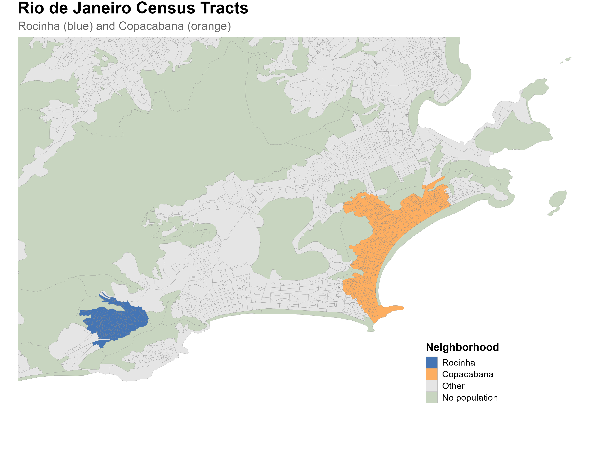
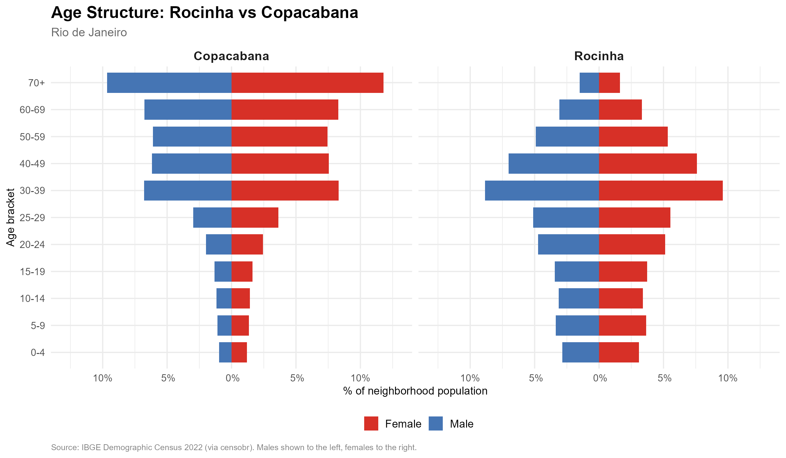
Rocinha, one of Brazil’s largest favelas, has a young population: large cohorts in the 18–29 age range, tapering off sharply after 50. Copacabana, one of Rio’s wealthiest neighborhoods, shows the opposite pattern: a narrower base of young adults and a large proportion of residents over 50. This difference reflects fertility rates, life expectancy, and migration patterns that are tightly linked to income, education, and living conditions.
Census tract codes. Neighborhoods are defined by aggregating IBGE 2022 census tracts whose centroids fall within the 2010 neighborhood boundaries (via
geobr::read_neighborhood()). Rocinha comprises 115 tracts (codes starting with330455705330, subdistrict 0533); Copacabana comprises 420 tracts (codes starting with330455705100, subdistrict 0510). Tracts shown in green on the map have zero population and are excluded from the interpolation.
Because these age signatures differ systematically across neighborhoods, they carry information about socioeconomic composition — and, by extension, about voting behavior. The method we describe exploits this: it finds weights that reproduce the census age structure at each tract when applied to station-level voter data. If the weights are correct for demographics, they should also produce good estimates for vote counts.
2. The Problem: Many-to-Many Spatial Disaggregation
Imagine you are a researcher who wants to know how Copacabana voted in the 2022 presidential election. The TSE can tell you how each polling station in the area voted. But several things make this harder than it seems:
- One station, many neighborhoods: a school in Botafogo may receive voters from Botafogo, Laranjeiras, and even from the Santa Marta favela up the hill. The station’s vote total is a mix of all these populations.
- One neighborhood, many stations: Copacabana voters may be assigned to polling stations in Copacabana itself, in neighboring Ipanema, or in Leme. The neighborhood’s voters are split across multiple stations.
- No lookup table: unlike in some countries, there is no official mapping from residential addresses to polling stations. The relationship is many-to-many, and there is no administrative data to resolve it.
This is not a standard areal interpolation problem. In areal interpolation, both source and target are polygons, and the overlap area provides natural weights. Here, the sources are points (stations), not polygons. Area-weighted interpolation does not apply. Nor is it a simple point-in-polygon assignment: since the mapping is many-to-many, assigning each tract to its nearest station (Voronoi) would lose information and produce poor estimates (we demonstrate this in Section 17).
The approach: estimating the association structure
Our solution estimates the association structure between tracts and stations — a weight matrix of dimension where each entry captures how much station “serves” tract .
Two fundamental properties are enforced:
- Source conservation (column constraint): each station distributes exactly 100% of its data. The total votes in the municipality are preserved exactly: for all .
- Population proportionality (row constraint): each tract receives total weight proportional to its population share: .
The method does not assume a fixed assignment of voters to stations. Instead, it estimates a smooth probabilistic mapping, calibrated against known demographic data.
Walking to vote: a behavioral assumption
The key behavioral assumption is that voters walk to their polling stations. This grounds the spatial model: closer stations receive more weight because voters are more likely to walk to them.
This assumption is supported by empirical evidence. Pereira et al. (2023) studied the effect of free public transit on election day in Brazilian cities, finding that it increased turnout — implying that transportation costs (including walking distance) are a meaningful barrier. Brazilian electoral law requires that voters be assigned to polling stations near their registered address, reinforcing the spatial proximity assumption.
Pereira, R. H. M., Braga, C. K. V., Serra, B., & Nadalin, V. (2023). “Free public transit and voter turnout.” Available at: https://www.urbandemographics.org/files/2023_Pereira_et_al_free_public_transit_voter_turnout.pdf
A second important assumption is that voters reside in the municipality where they are registered to vote, which is the same municipality captured by the census. This residential assumption is what allows us to use census population data as the target distribution: the age structure of voters at a polling station should reflect the age structure of the surrounding population. Without this assumption, the calibration step would not be valid.
We use realistic walking travel times computed on the OpenStreetMap road network, not straight-line distances. Mountains, rivers, and the street layout all affect the actual travel time and are captured by the routing engine (see Section 9).
3. Pipeline Overview
The full interpolation pipeline has six steps:
-
Census data: population counts by age bracket per
tract (
br_prepare_population()) -
Tract geometries: census tract polygons from IBGE
(
br_prepare_tracts()) -
Electoral data: votes, turnout, and voter
demographics per station (
br_prepare_electoral()) -
Travel times: walking routes from tract
representative points to stations
(
compute_travel_times()) -
Optimization: find per-tract decay parameters
that minimize demographic mismatch (
optimize_alpha()) -
Interpolation: use the column-normalized weight
matrix from optimization (or rebuild with
compute_weight_matrix()) and apply it to any station-level variable ()
The convenience function interpolate_election_br() wraps
all six steps into a single call for Brazilian municipalities, handling
data downloads, geocoding, and default parameter selection
automatically.
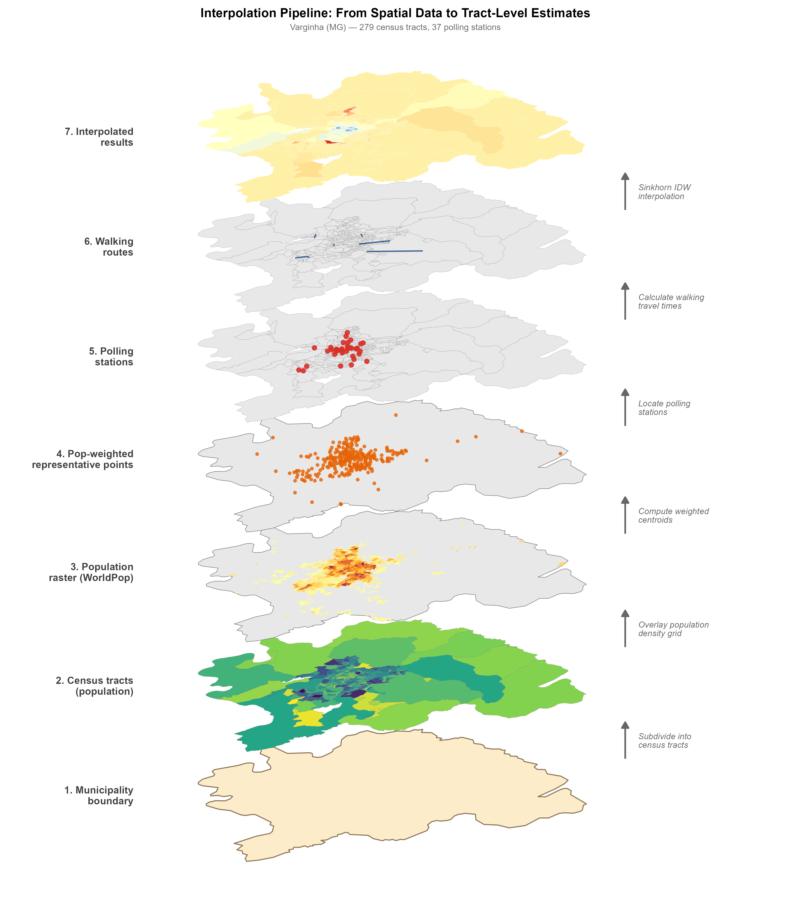
The figure above illustrates the spatial data layers involved. Starting from the bottom: the municipality boundary, census tracts colored by population, polling station locations, and the final interpolated results at the tract level.
Part II: Data
4. Census Population Data
pop_data <- br_prepare_population("3170701", year = 2022)
head(pop_data[, 1:10]) code_tract code_muni pop_00_04 pop_05_09 pop_10_14 pop_15_19 pop_20_24 pop_25_29 pop_30_39 pop_40_49
1 3170701xxxxx 3170701 68 68 62 88 68 58 144 129
2 3170701xxxxx 3170701 37 36 47 38 47 44 83 95
...The data frame also includes calibration columns that cross gender (male/female) × 7 age brackets. These calibration variables bridge census tracts and polling stations.
| Age bracket | Census column | TSE equivalent |
|---|---|---|
| 18–19 |
pop_hom_18_19, pop_mul_18_19
|
vot_hom_18_19, vot_mul_18_19
|
| 20–24 |
pop_hom_20_24, pop_mul_20_24
|
vot_hom_20_24, vot_mul_20_24
|
| 25–29 |
pop_hom_25_29, pop_mul_25_29
|
vot_hom_25_29, vot_mul_25_29
|
| 30–39 |
pop_hom_30_39, pop_mul_30_39
|
vot_hom_30_39, vot_mul_30_39
|
| 40–49 |
pop_hom_40_49, pop_mul_40_49
|
vot_hom_40_49, vot_mul_40_49
|
| 50–59 |
pop_hom_50_59, pop_mul_50_59
|
vot_hom_50_59, vot_mul_50_59
|
| 60–69 |
pop_hom_60_69, pop_mul_60_69
|
vot_hom_60_69, vot_mul_60_69
|
How the 7 brackets are built. The TSE voter profile
data records voters in 13 finer age bins (18, 19, 20, 21–24, 25–29,
30–34, 35–39, 40–44, 45–49, 50–54, 55–59, 60–64, 65–69).
br_prepare_electoral() aggregates these into the 7 groups
above so they align with the census age brackets. For the 2022 Census —
which reports a 15–19 group instead of 18–20 — the calibration matching
step applies a
proxy to approximate the 18–19 voting-age share from the census tract
population data.
These 7 matched brackets are the key insight: they are observed at both levels (census tracts and polling stations), enabling calibration. The calibration crosses gender × 7 age groups (14 brackets), providing a strong spatial signal because the optimizer must simultaneously match the spatial distribution of each gender–age subgroup.
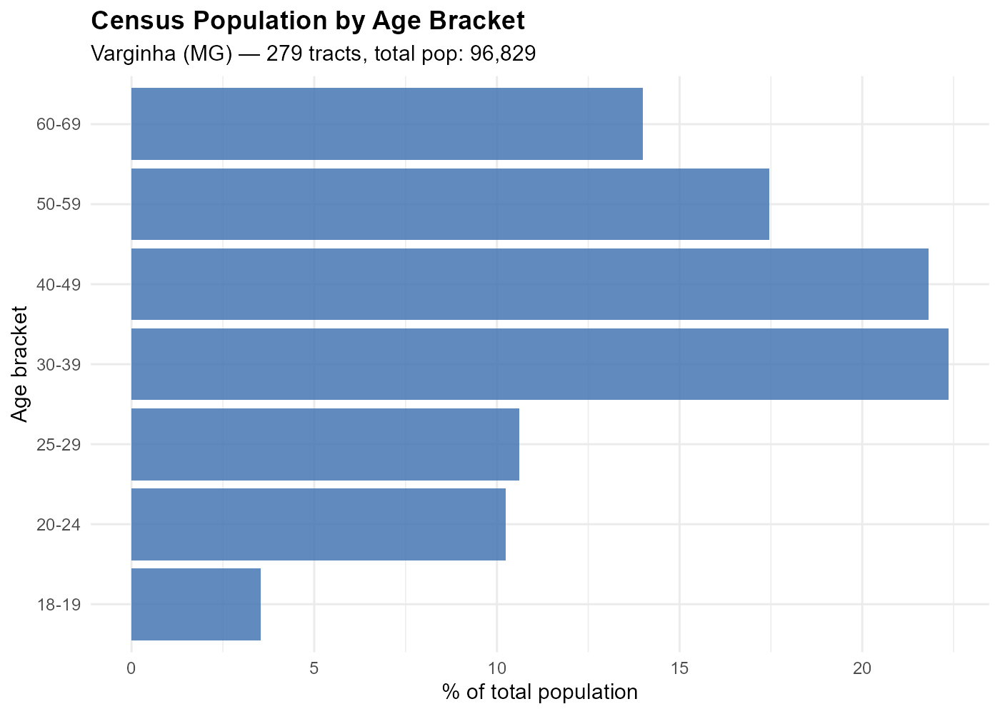
5. Census Tract Geometries
tracts_sf <- br_prepare_tracts(3170701, pop_data, year = 2022)This downloads tract geometries from geobr, transforms
to EPSG:5880 (equal-area projection for accurate spatial operations),
and joins the population columns. Tracts with very low population can be
filtered later via the min_tract_pop parameter in
interpolate_election().
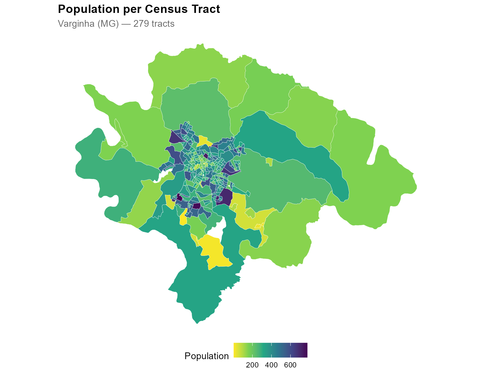
Note the urban-rural gradient: small, densely populated tracts in the city center; large, sparsely populated tracts on the periphery.
6. Electoral Data at Polling Stations
electoral <- br_prepare_electoral(
code_muni_ibge = "3170701",
code_muni_tse = "54135",
uf = "MG", year = 2022,
cargo = "presidente", turno = 1,
what = c("candidates", "turnout")
)The result contains one row per voting location with:
-
Vote columns (
CAND_13,CAND_22, …): votes per candidate (ballot number as suffix; 95 = blank, 96 = null) -
Turnout (
QT_COMPARECIMENTO): total voters who showed up -
Voter age profiles (
votantes_18_19, …,votantes_65_69): TSE’s fine-grained age registration brackets, aggregated to match the 7 census brackets -
Coordinates (
lat,long): geocoded polling station locations -
Column dictionary:
attr(electoral, "column_dictionary")contains metadata for each column (type, cargo, candidate name, party)
The what parameter controls what gets included:
-
"candidates": one column per candidate -
"parties": aggregated by party (PARTY_PT,PARTY_PL, …) -
"turnout":QT_COMPARECIMENTO,QT_APTOS,QT_ABSTENCOES -
"demographics":GENERO_*andEDUC_*columns
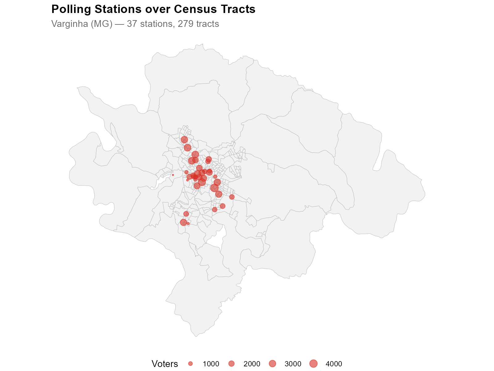
7. Calibration Variables: Comparing Source and Target
The calibration variables are the bridge between census tracts and polling stations. The same age brackets are observed at both levels:
- Census: “How many people aged 18–19 live in this tract?” (from IBGE)
- Electoral: “How many registered voters aged 18–19 voted at this location?” (from TSE)
These are the same age brackets we saw distinguishing Rocinha from Copacabana in Section 1. The demographic signature that varies across neighborhoods is precisely what the method uses to calibrate the weights.
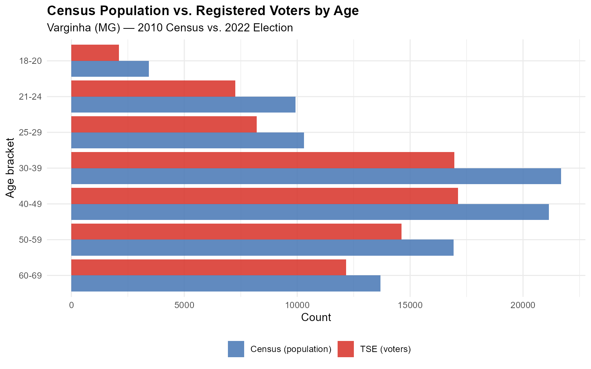
The shapes are similar but totals differ: the census counts residents, the TSE counts registered voters. Not everyone of voting age is registered, and registration rates vary by age bracket.
The optimization finds alpha values so that the interpolated voter age profiles match the census age profiles at each tract. If the weights are correct for demographics, they should also be correct for vote counts.
Part III: Geography
8. Representative Points: From Tracts to Routable Origins
Routing engines need point-to-point queries, but tracts are polygons. We need a single representative point per tract. Three methods are available:
| Method | Function | Guarantee |
|---|---|---|
"centroid" |
sf::st_centroid() |
Fast. May fall outside concave polygons. |
"point_on_surface" |
sf::st_point_on_surface() |
Guaranteed inside. Default. |
"pop_weighted" |
WorldPop raster + terra::patches()
|
Cluster-based: largest population cluster with road-proximity refinement. Best for large tracts. |
The choice of representative point matters most for large, irregularly shaped tracts in rural and peri-urban areas. Consider the southern periphery of São Paulo, where census tracts extend over several square kilometers of mixed urban and forested land:
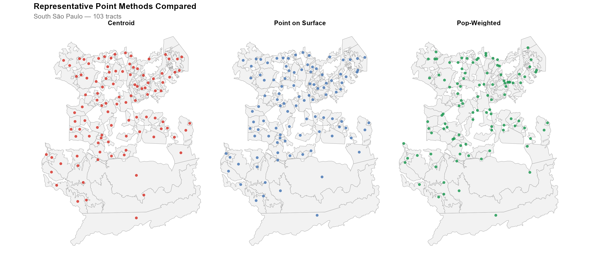
The three-panel comparison shows the same set of large tracts in south São Paulo. The red dots (centroids) frequently fall in uninhabited areas — in the middle of Mata Atlântica forest or in empty fields. The blue dots (point on surface) are guaranteed to be inside the polygon, but may still be far from where people actually live. The green dots (pop-weighted) use the WorldPop population raster to find the most densely populated cell within each tract, placing the representative point where residents actually are.
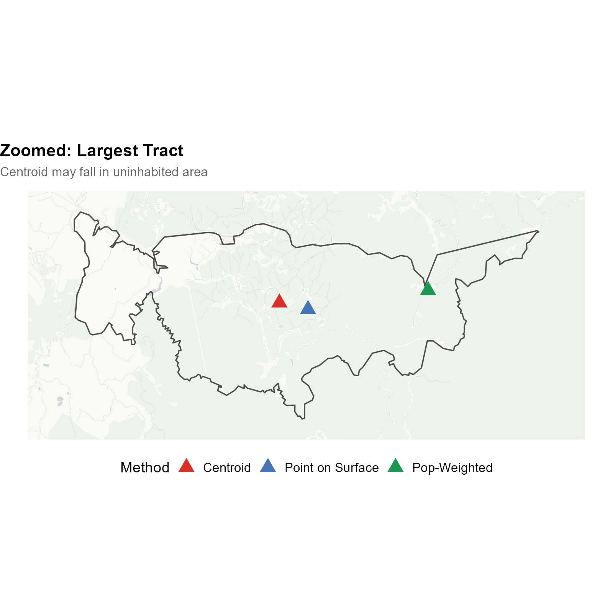
Zooming into the largest tract, the centroid falls in dense forest while the pop-weighted point correctly identifies the settlement area. This difference can affect travel time calculations by tens of minutes.
pts_pos <- compute_representative_points(tracts_sf,
tract_id = "code_tract", method = "point_on_surface")
pts_pop <- compute_representative_points(tracts_sf,
tract_id = "code_tract", method = "pop_weighted")The pop_weighted method downloads the WorldPop Brazil
Constrained 2020 raster (~48 MB, cached) and uses a multi-step
algorithm:
- Identify connected clusters of populated cells via
terra::patches() - Select the largest cluster by total population
- If OSM road data is available, apply tiered road proximity refinement (cells within 200 m of roads are preferred)
- Within the selected cluster (and road-proximate subset), choose the cell with the highest population density
The min_area_for_pop_weight parameter (default: 1 km²)
controls the threshold: tracts smaller than this use
point_on_surface regardless of the chosen method, since
small urban tracts are dense enough that any interior point is a
reasonable proxy.
9. Travel Times: Building the Distance Matrix
9.1 Why travel time?
In Brazil, voters are assigned to polling stations near their registered address. On election day, most voters walk to their polling station. This is not merely an assumption of convenience — it is grounded in the geographic design of the Brazilian electoral system and in empirical evidence.
Pereira et al. (2023) studied the introduction of free public transit on election days in Brazilian cities. Their finding that free transit significantly increased turnout implies that the cost of getting to the polls — primarily walking distance — is a real barrier that affects participation. If distance matters for whether people vote at all, it certainly matters for where they vote.
We therefore use realistic travel times computed on the OpenStreetMap road network, not Euclidean (straight-line) distances. The routing engine (r5r) accounts for the actual street layout, elevation, one-way streets, pedestrian paths, and physical barriers. The default AUTO mode attempts walking first and falls back to car routing if needed.
9.2 Euclidean distance vs. walking routes
Why not just use straight-line distance? Because geography creates dramatic discrepancies between Euclidean distance and actual walking time. Two examples:
Example 1: Mountain barrier (Rio de Janeiro)
A point in the Botafogo neighborhood lies at the base of the Corcovado/Sumaré hills. A polling station in Laranjeiras sits on the other side. In a straight line, the distance is modest — but the walking route must navigate around the steep terrain:
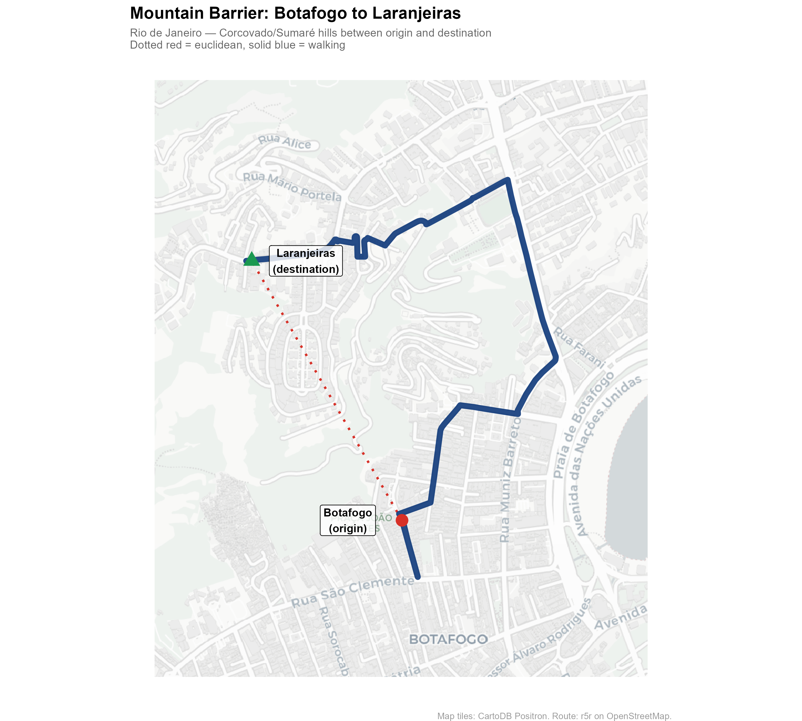
The solid blue line shows the actual walking route computed by r5r on the OSM road network. The dotted red line shows the straight-line distance. In mountainous terrain, these can differ by a factor of 3–5x.
Example 2: Water barrier (Recife)
A point in the Boa Vista neighborhood and a destination in the Brasília Teimosa peninsula are separated by Recife’s waterways. The walking route must navigate around the estuary and cross bridges, adding significant distance compared to the straight line.
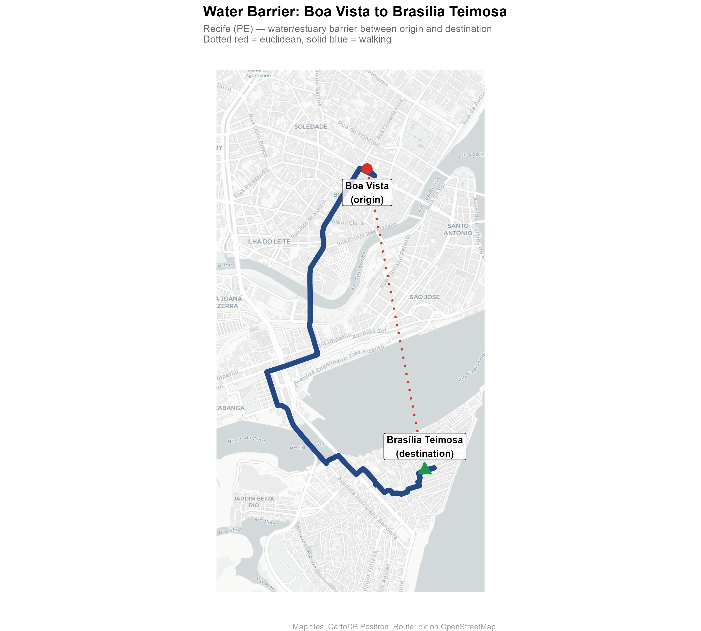
Example 3: Water barrier (Florianópolis)
Florianópolis, capital of Santa Catarina, is split between the mainland and an island in the Atlantic. A point in Coqueiros (mainland) and a destination at Costeira do Pirajubaé (island) are separated by the bay. The walking route must detour to one of the bridges connecting the two sides:
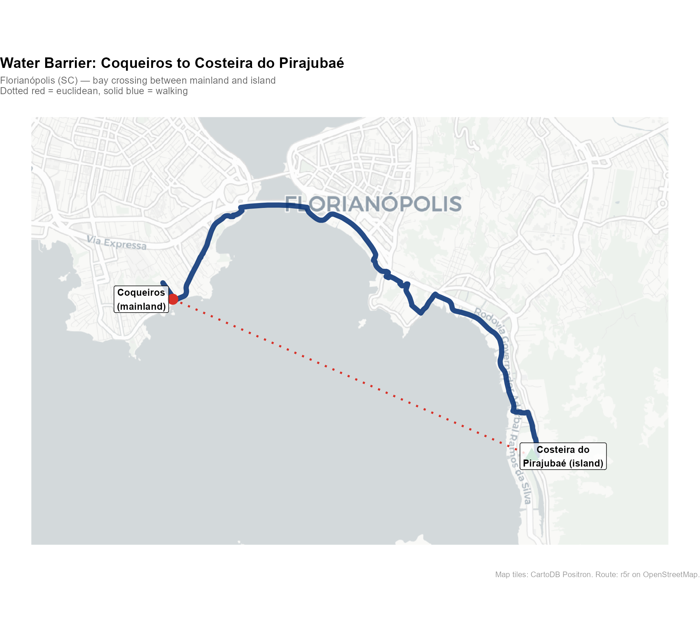
These examples illustrate why Euclidean distance is a poor proxy for actual accessibility — and why the routing engine matters.
9.3 Building the travel time matrix
time_matrix <- compute_travel_times(
tracts_sf = tracts_sf,
points_sf = electoral_sf,
network_path = network_path,
tract_id = "code_tract",
point_id = "id",
routing = routing_control()
)This builds an [N tracts × M stations] matrix of travel times in minutes, using the r5r routing engine on OpenStreetMap data.
- Origins: representative points (from Section 8)
- Destinations: voting location coordinates
- Mode: AUTO (default) — attempts walking first, then falls back to car routing if more than 1% of pairs are unreachable by foot
-
Max trip duration: 120 minutes (default); pairs
beyond this threshold are
NA(unreachable) and receive exactly zero weight
The OSM data is downloaded via download_r5r_data(),
which fetches state-level .pbf files and clips them to the
municipality bounding box using osmium.
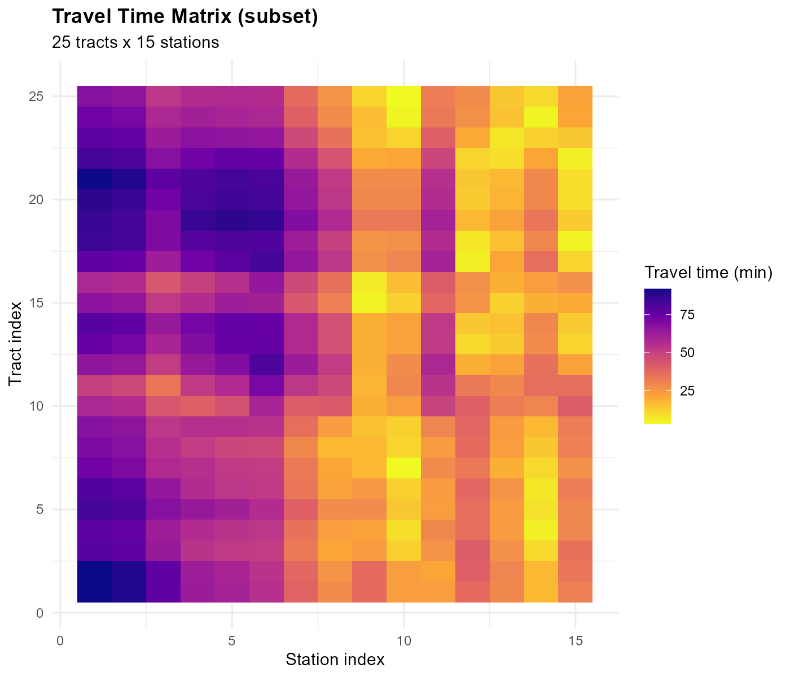
The heatmap shows spatial structure: a block-diagonal pattern where nearby tract-station pairs have short travel times.
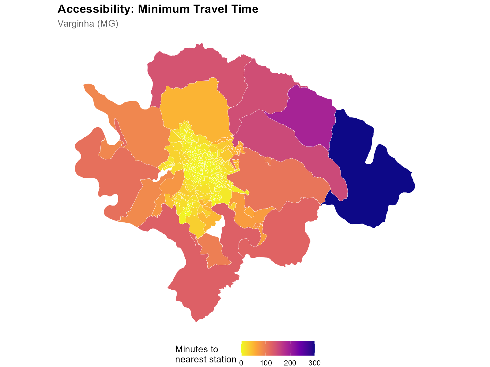
Tracts in the center have short travel times to the nearest station; peripheral tracts are farther away.
The offset: before applying the power-law IDW kernel
(the default), we add 1 to all travel times
(time_matrix + 1) to avoid singularity when
.
The exponential kernel does not need this offset (see Section 10).
Part IV: The Weight Matrix
10. The IDW Kernel: Turning Distance into Influence
Intuition: gravitational pull
Think of each polling station as exerting a “gravitational pull” on nearby tracts. Closer stations pull harder. The IDW (Inverse Distance Weighting) kernel translates this intuition into numbers: given a travel time between a tract and a station, it produces a weight that decreases with distance.
A concrete example
Suppose a tract has three nearby stations at 5, 12, and 30 minutes walking distance. How much should each station contribute to this tract’s estimate? With a decay parameter :
tt <- c(5, 12, 30) # travel times in minutes
alpha <- 2
raw_weights <- (tt + 1)^(-alpha)
normalized <- raw_weights / sum(raw_weights)
cat("Travel times:", tt, "minutes\n")
#> Travel times: 5 12 30 minutes
cat("Raw weights: ", round(raw_weights, 5), "\n")
#> Raw weights: 0.02778 0.00592 0.00104
cat("Normalized: ", round(normalized, 3), "\n")
#> Normalized: 0.8 0.17 0.03
cat("The 5-min station gets", round(normalized[1] * 100),
"% of this tract's weight\n")
#> The 5-min station gets 80 % of this tract's weightThe nearest station (5 min) gets the lion’s share of the weight. The 30-minute station contributes very little.
The formula
The package supports two kernel functions, selected via
optim_control(kernel = ...):
Power-law kernel (default):
Exponential kernel:
Both share the unified form , where for the power kernel and for the exponential. Everything downstream (column normalization, Poisson deviance, gradient computation) is kernel-agnostic.
The kernels differ in tail behavior. For the power kernel, the relative decay is approximately constant regardless of distance (heavy tail). For the exponential kernel, the relative decay increases with distance (light tail). These are structural differences in shape, not claims about which kernel produces more localized weights — that depends on what the optimizer finds.
Note that has different units across kernels: it is dimensionless for the power kernel but has units of for the exponential. The optimizer finds the appropriate scale automatically, so comparing kernels at the “same alpha” is meaningless.
For the default power kernel, the raw weight between tract and station is:
where:
- : travel time from tract to station (minutes)
- : decay parameter for tract (to be optimized)
How alpha controls the decay
tt_range <- 0:60
alphas <- c(0.5, 1, 2, 5, 10)
decay_df <- do.call(rbind, lapply(alphas, function(a) {
data.frame(time = tt_range, weight = (tt_range + 1)^(-a),
alpha = paste0("alpha = ", a))
}))
decay_df$alpha <- factor(decay_df$alpha,
levels = paste0("alpha = ", alphas))
library(ggplot2)
ggplot(decay_df, aes(x = time, y = weight, color = alpha)) +
geom_line(linewidth = 0.8) +
scale_y_log10() +
labs(title = "Weight Decay Curves",
subtitle = "Higher alpha = steeper decay = more concentrated weights",
x = "Travel time (minutes)", y = "Weight (log scale)",
color = "") +
theme_minimal() +
theme(plot.title = element_text(face = "bold"),
legend.position = "right")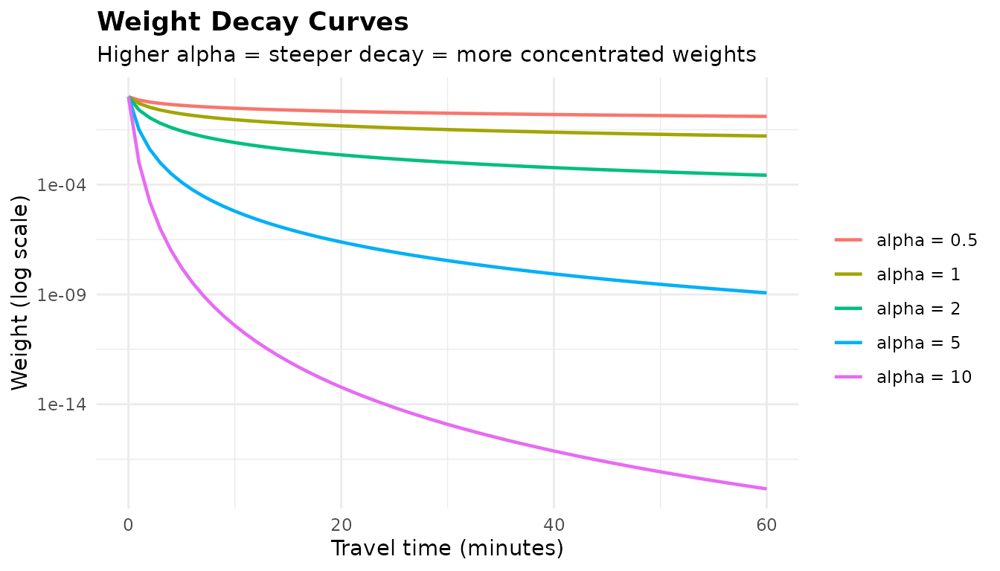
- : nearly flat — all stations contribute almost equally
- : moderate — stations within 10 minutes dominate
- : steep cliff — only the nearest station matters
Why per-tract alpha?
A single global cannot capture the heterogeneity of urban geography. Urban centers have many overlapping station catchments — these tracts need a low to spread weight across several stations. Isolated peripheral tracts with one nearby station need a high to concentrate weight. The optimizer finds the best for each tract independently.
11. Why Single-Sided Standardization Fails
Before describing the column normalization approach used by the package, let us understand why simpler row-based approaches do not work. We need to normalize the raw weight matrix so that the weights sum to meaningful quantities. There are two natural choices — and only column normalization provides the guarantee we need.
11.1 Column-only standardization
The first approach: divide each column by its sum so that each station distributes 100% of its data:
Column sums = 1 (source conservation: every vote is distributed exactly once). But there is no constraint on row sums.
# Toy example: 5 tracts, 3 stations
tt_toy <- matrix(
c(2, 10, 25, 30, 50, # station 1: close to tract 1
15, 3, 12, 28, 45, # station 2: close to tract 2
40, 35, 20, 5, 8), # station 3: close to tracts 4-5
nrow = 5, ncol = 3
)
pop_toy <- c(100, 300, 150, 200, 250) # population per tract
alpha_toy <- rep(2, 5)
W_raw <- (tt_toy + 1)^(-alpha_toy)
# Column standardize
W_col <- t(t(W_raw) / colSums(W_raw))
cat("Column sums (should be 1 — OK):\n")
#> Column sums (should be 1 — OK):
round(colSums(W_col), 4)
#> [1] 1 1 1
cat("\nRow sums (uncontrolled — BAD):\n")
#>
#> Row sums (uncontrolled — BAD):
round(rowSums(W_col), 4)
#> [1] 0.9751 0.9300 0.1439 0.6594 0.2917
cat("\nPopulation shares (what rows should look like):\n")
#>
#> Population shares (what rows should look like):
round(pop_toy / sum(pop_toy) * 3, 4)
#> [1] 0.30 0.90 0.45 0.60 0.75Tract 1 has only 10% of the population but receives a disproportionate share because it is close to station 1. Municipal totals are preserved, but the distribution across tracts is wrong.
11.2 Row-only standardization
The opposite approach: normalize rows to match population shares.
# Row standardize to population-proportional targets
m <- ncol(tt_toy)
row_targets_toy <- pop_toy / sum(pop_toy) * m
W_row <- W_raw * (row_targets_toy / rowSums(W_raw))
cat("Row sums (should match population targets — OK):\n")
#> Row sums (should match population targets — OK):
round(rowSums(W_row), 4)
#> [1] 0.30 0.90 0.45 0.60 0.75
cat("\nColumn sums (should be 1 — BAD):\n")
#>
#> Column sums (should be 1 — BAD):
round(colSums(W_row), 4)
#> [1] 0.5038 1.1226 1.3736Now the rows are correct, but the column sums are wrong. Some stations “distribute” more than 100% of their votes, others less than 100%. The municipal total is no longer conserved: if we multiply these weights by vote counts, we get more (or fewer) total votes than actually existed.
The choice: column normalization
- Column-only: preserves totals (source conservation) — every vote is distributed exactly once. The spatial distribution across tracts is governed by the optimized alpha parameters, which are calibrated against census demographics.
- Row-only: distributes correctly but does not preserve totals.
Column normalization is the right choice because source conservation is the non-negotiable constraint: we must not create or destroy votes. The alpha optimization (Section 13) takes care of making the row-side distribution match census demographics as closely as possible.
12. Column Normalization: Source Conservation
12.1 The idea: preserving station totals
The core constraint is source conservation: each polling station must distribute exactly 100% of its data. If a station recorded 500 votes, the interpolation must assign exactly 500 votes across all tracts — no more, no less.
Column normalization enforces this directly: divide each column of the raw weight matrix by its sum so that each station’s weights sum to 1.
where is the IDW kernel from Section 10.
12.2 Worked example
# Using the toy example from Section 11
# W_raw is already defined: 5 tracts, 3 stations
W_col <- t(t(W_raw) / colSums(W_raw))
cat("Column sums (should be 1 — source conservation):\n")
#> Column sums (should be 1 — source conservation):
round(colSums(W_col), 4)
#> [1] 1 1 1
cat("\nRow sums (governed by alpha — not explicitly constrained):\n")
#>
#> Row sums (governed by alpha — not explicitly constrained):
round(rowSums(W_col), 4)
#> [1] 0.9751 0.9300 0.1439 0.6594 0.2917
cat("\nWeight matrix:\n")
#>
#> Weight matrix:
print(round(W_col, 4))
#> [,1] [,2] [,3]
#> [1,] 0.9087 0.0528 0.0136
#> [2,] 0.0676 0.8448 0.0176
#> [3,] 0.0121 0.0800 0.0518
#> [4,] 0.0085 0.0161 0.6348
#> [5,] 0.0031 0.0064 0.2821Each station distributes exactly 100% of its data. The distribution across tracts is determined by the IDW kernel: tracts closer to a station receive more weight. The alpha optimization (Section 13) adjusts the decay parameters so that the resulting tract-level estimates match census demographics as closely as possible.
Key properties:
- Source conservation: column sums are exactly 1
- Non-negative: all weights are non-negative
- Deterministic: no iterative procedure, just a single division
- Unreachable tracts (all-zero rows) remain zero and are flagged
12.3 Per-Bracket Column Normalization
The problem: age groups have different geographies
Think about the spatial distribution of voters by age. Young adults (18–24) cluster near universities, cheap rental apartments, and transit corridors. Elderly voters (60–69) concentrate in established neighborhoods, retirement communities, and areas with healthcare facilities. These spatial patterns differ substantially — yet a single weight matrix must allocate all age groups simultaneously.
With aggregate column normalization, the weight matrix has one set of weights for all age brackets. The optimizer must find one set of weights that simultaneously matches multiple different demographic distributions. This is an inherent compromise: weights that correctly distribute 18–20 year-olds may systematically misallocate 60–69 year-olds, and vice versa.
The per-bracket extension
Per-bracket column normalization addresses this by building a separate column-normalized weight matrix for each demographic bracket . Instead of one weight matrix , we build bracket-specific matrices , each column-normalized independently:
For each bracket :
- Compute the IDW kernel: (per-tract, per-bracket decay parameter)
- Column-normalize:
Aggregate (voter-weighted):
where is the voter count for bracket at station . Each bracket’s contribution is weighted by the number of voters it represents at that station, so brackets with more voters have proportionally more influence on the aggregated weights.
Why this works
Each bracket’s column-normalized weights distribute that bracket’s station-level data across tracts proportionally to the IDW kernel. The alpha optimization (Section 13) adjusts the per-tract, per-bracket decay parameters so that the resulting interpolated demographics match the census demographics across all brackets simultaneously. The per-bracket structure allows different demographic groups to have different spatial reaches — young voters may draw from more distant stations than elderly voters.
# Bracket 1 ("young"): concentrated near station 1
# Bracket 2 ("old"): concentrated near station 3
pop_young <- c(60, 100, 50, 30, 20) # young pop per tract
pop_old <- c(40, 200, 100, 170, 230) # old pop per tract
src_young <- c(150, 70, 40) # young voters per station
src_old <- c(100, 330, 310) # old voters per station
# --- Per-bracket alpha values (different spatial reach) ---
alpha_young <- 1.5 # young voters: broader reach
alpha_old <- 3.0 # old voters: more localized
# Build separate IDW kernels with different decay
K_young <- (tt_toy + 1)^(-alpha_young)
K_old <- (tt_toy + 1)^(-alpha_old)
# Column-normalize each bracket independently
W_young <- t(t(K_young) / colSums(K_young))
W_old <- t(t(K_old) / colSums(K_old))
# Interpolate each bracket with its own weight matrix
young_hat <- as.numeric(W_young %*% src_young)
old_hat <- as.numeric(W_old %*% src_old)
# Voter-weighted aggregation: W_agg = sum(W_k * c_k) / sum(c_k)
c_total <- src_young + src_old
W_agg <- (W_young * rep(src_young, each = nrow(W_young)) +
W_old * rep(src_old, each = nrow(W_old))) /
rep(c_total, each = nrow(W_young))
poisson_dev <- function(obs, fit) {
2 * sum(fit - obs * log(ifelse(obs > 0, fit, 1)) +
ifelse(obs > 0, obs * log(obs), 0) - obs)
}
cat("=== Young bracket (alpha = 1.5, broader reach) ===\n")
#> === Young bracket (alpha = 1.5, broader reach) ===
cat("Census truth: ", pop_young, "\n")
#> Census truth: 60 100 50 30 20
cat("Per-bracket interp:", round(young_hat), "\n")
#> Per-bracket interp: 130 70 17 28 15
cat("Deviance: ", round(poisson_dev(pop_young, young_hat)), "\n")
#> Deviance: 103
cat("\n=== Old bracket (alpha = 3.0, more localized) ===\n")
#>
#> === Old bracket (alpha = 3.0, more localized) ===
cat("Census truth: ", pop_old, "\n")
#> Census truth: 40 200 100 170 230
cat("Per-bracket interp:", round(old_hat), "\n")
#> Per-bracket interp: 103 318 15 234 69
cat("Deviance: ", round(poisson_dev(pop_old, old_hat)), "\n")
#> Deviance: 563Different alpha values give each demographic group a different spatial reach. The optimizer finds per-tract, per-bracket decay parameters that minimize the total Poisson deviance across all brackets simultaneously.
# Visual comparison: census truth vs per-bracket estimate
comparison_df <- data.frame(
tract = rep(1:5, 4),
value = c(pop_young, pop_old, young_hat, old_hat),
bracket = rep(c("Young", "Old", "Young", "Old"), each = 5),
source = rep(c("Census truth", "Census truth",
"Per-bracket estimate",
"Per-bracket estimate"),
each = 5)
)
ggplot(comparison_df,
aes(x = factor(tract), y = value, fill = source)) +
geom_col(position = "dodge", width = 0.7) +
facet_wrap(~bracket, scales = "free_y") +
scale_fill_manual(values = c("Census truth" = "#4575b4",
"Per-bracket estimate" = "#fdae61")) +
labs(title = "Per-Bracket Column Normalization: Recovery of Age-Group Profiles",
subtitle = "Each bracket has its own alpha and weight matrix",
x = "Tract", y = "Population", fill = "") +
theme_minimal() +
theme(plot.title = element_text(face = "bold"),
legend.position = "bottom")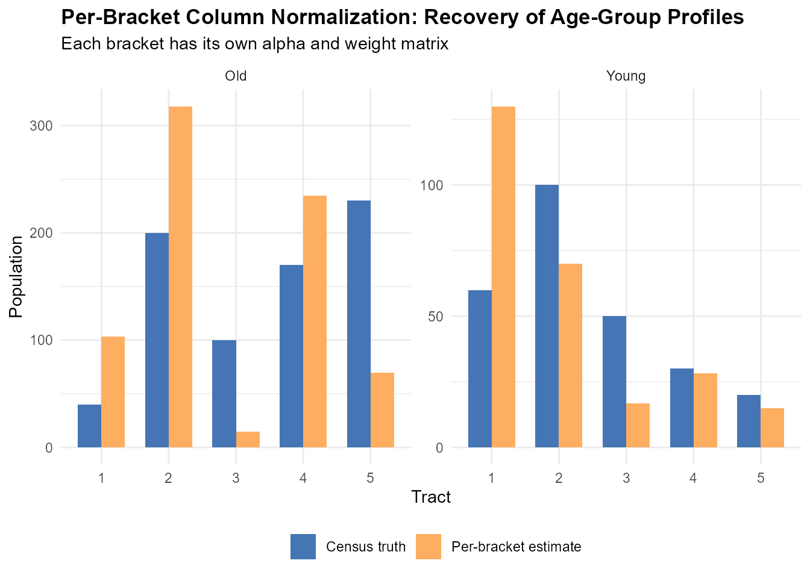
Connection to the optimizer
During optimization (Section 14), the per-bracket column
normalization is performed on 3D tensors of shape
[ka x n x m], where ka is the number of active
demographic brackets. This vectorizes all
separate normalization operations into a single batched computation on
GPU or CPU.
After optimization, the weight matrix
is returned directly from optimize_alpha() as
result$W. It can also be recomputed from pre-existing alpha
values using compute_weight_matrix():
# W is already in the optimization result
W <- optim_result$W
# Or recompute from alpha
W <- compute_weight_matrix(time_matrix, alpha,
pop_matrix = pop_matrix,
source_matrix = source_matrix)When pop_matrix and source_matrix are
provided, the function automatically uses per-bracket mode.
Part V: Calibration and Optimization
13. The Calibration Objective
13.1 The key insight
We have all the ingredients: travel times, an IDW kernel parametrized by , and column normalization to enforce source conservation. Now we need to find the right .
Here is the calibration logic: if the weights are correct, then interpolating voter age profiles from stations should recover the census age profiles at each tract.
Consider a concrete example. Census data says tract X has 200 people aged 30–39. If our weights are good, then multiplying the weight row for tract X by the station-level voter counts for the 30–39 age bracket should give us approximately 200. If it gives 150 or 300, the weights are wrong — the geographic allocation is biased.
The optimization finds values that minimize this mismatch across all tracts and all age brackets simultaneously.
13.2 The iterative procedure
The optimization is a loop:
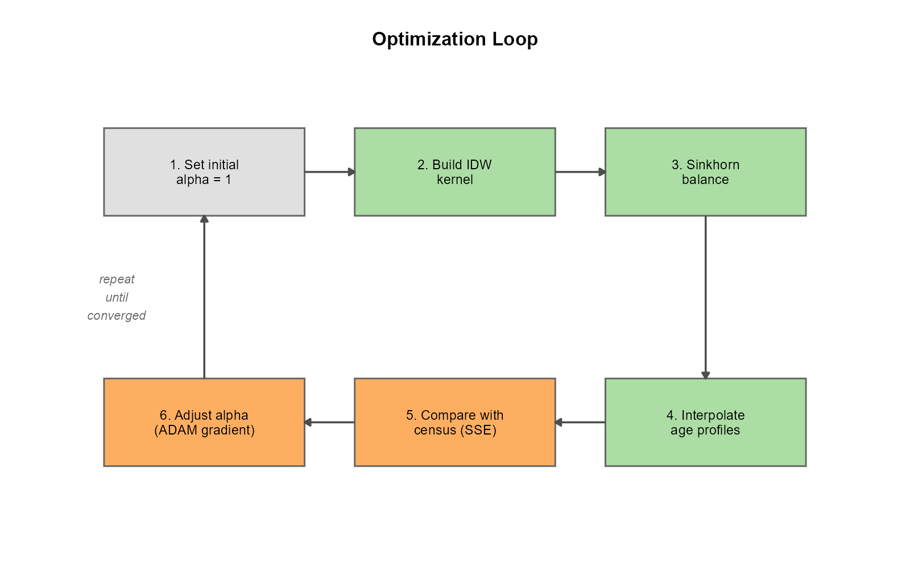
In words:
- Initialize: set for all tracts (moderate decay)
- Build the IDW kernel: compute raw weights from travel times and current
- Column-normalize: enforce source conservation (column sums = 1)
- Interpolate demographics: multiply normalized weights by station-level age profiles
- Compare with census: compute the Poisson deviance between interpolated and census age profiles
- Adjust : use the gradient (via automatic differentiation) to nudge in the direction that reduces the loss
- Repeat until the loss converges
Each iteration of this loop evaluates the complete forward pass: .
13.3 The data-fit term: Poisson deviance
Voter counts are non-negative integers. The Poisson deviance is the natural goodness-of-fit measure for count data: it penalizes relative deviations rather than absolute ones. A tract with 10 predicted voters vs. 20 observed is penalized more heavily than a tract with 1,000 predicted vs. 1,010 observed — even though both differ by 10.
where:
- — interpolated voter demographics per tract, with built via per-bracket column normalization (Section 12.3)
- — census demographics per tract
- = demographic bracket index ( for full gender age calibration)
When for all entries, . The constant terms are precomputed once and do not depend on .
13.4 Regularization: barrier, entropy, and quadratic penalties
Poisson deviance alone can produce degenerate solutions: some tracts might receive zero predicted voters (collapsed allocation), or weights might be too diffuse or too concentrated. Three penalty terms address these pathologies.
Log-barrier penalty (prevents zero-voter tracts):
where is the total predicted population in tract . The barrier diverges as any tract’s total approaches zero, preventing collapsed allocations. Default strength .
Entropy penalty (controls weight concentration):
where are the row-normalized aggregated weights. is the Shannon entropy of tract ’s weight distribution — higher values mean more stations contribute. The strength can be set manually or tuned automatically via dual ascent (Section 14.5).
Per-tract quadratic penalty (augmented Lagrangian):
where
is the per-tract entropy target (Section 14.5). This quadratic term
works alongside the linear entropy penalty in an augmented Lagrangian
framework, driving each tract’s entropy toward its individual target.
Active only in adaptive mode (target_eff_src set).
13.5 The total loss
The Poisson deviance
dominates in magnitude; the barrier
is a safety net (typically small); and the entropy terms
implement entropy control. In the default mode (no
target_eff_src),
and the optimizer minimizes
only.
Figure @ref(fig:fig-loss-decomposition) shows the relative contribution of each loss component at convergence across 26 Brazilian state capitals. Deviance dominates in all cities, but Norte/Centro-Oeste capitals with structural infeasibility (Macapá, Manaus, Brasília, Rio de Janeiro) show elevated entropy penalties as the dual ascent works harder to achieve the entropy targets.
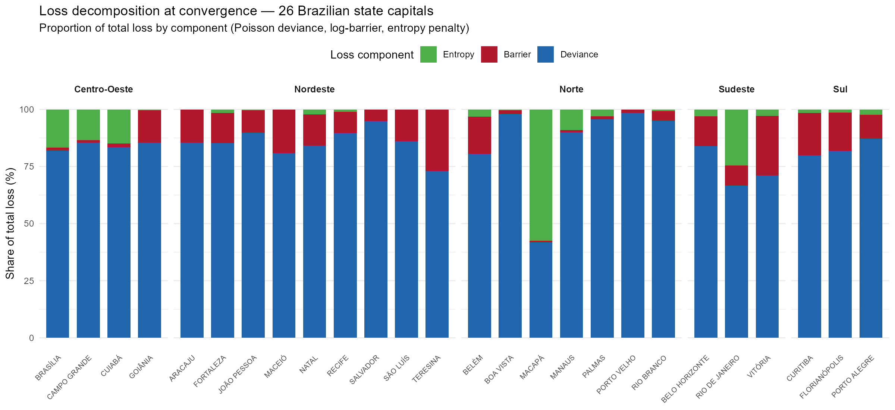
Loss decomposition at convergence across 26 state capitals. Deviance dominates, but cities with sparse road networks (Norte) show elevated entropy penalties.
# Simplified case: all tracts share the same alpha
tt_adj <- tt_toy + 1
pop_matrix_toy <- matrix(pop_toy, ncol = 1)
src_matrix_toy <- matrix(c(250, 400, 350), ncol = 1)
alpha_range <- seq(0.1, 8, by = 0.1)
deviance_values <- sapply(alpha_range, function(a) {
# Compute column-normalized weights and Poisson deviance
K <- tt_adj ^ (-a)
K[!is.finite(K)] <- 0
W <- t(t(K) / colSums(K)) # column-normalize
v_hat <- as.numeric(W %*% src_matrix_toy)
p <- as.numeric(pop_matrix_toy)
# Poisson deviance: 2 * sum(v_hat - p*log(v_hat) + p*log(p) - p)
v_safe <- ifelse(v_hat > 0, v_hat, 1e-30)
2 * sum(v_safe - p * log(ifelse(p > 0, v_safe, 1))
+ ifelse(p > 0, p * log(p), 0) - p)
})
ggplot(data.frame(alpha = alpha_range, deviance = deviance_values),
aes(x = alpha, y = deviance)) +
geom_line(color = "#4575b4", linewidth = 0.8) +
geom_vline(xintercept = alpha_range[which.min(deviance_values)],
linetype = "dashed", color = "#d73027") +
labs(title = "Objective Function Landscape",
subtitle = sprintf(
"Minimum at alpha = %.1f (shared across all tracts)",
alpha_range[which.min(deviance_values)]),
x = expression(alpha), y = "Poisson Deviance") +
theme_minimal() +
theme(plot.title = element_text(face = "bold"))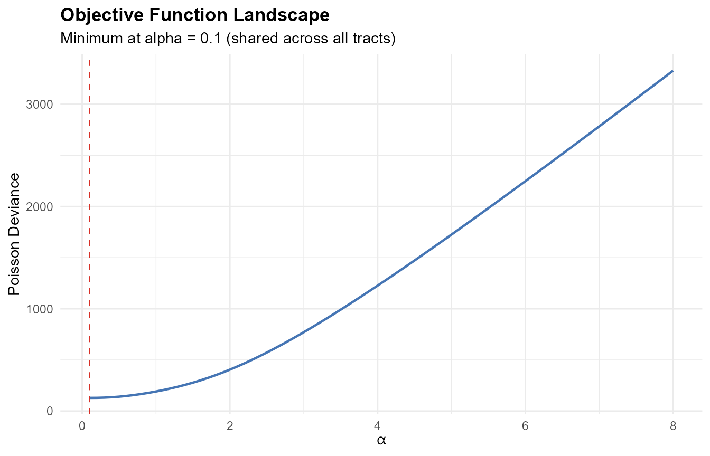
The landscape has a clear minimum. In practice, each tract has its own alpha (per bracket), creating a high-dimensional optimization problem.
14. Optimization: Per-Bracket Gradient Descent with Column Normalization
14.1 Why automatic differentiation?
The objective function involves column normalization of the IDW kernel, followed by matrix multiplication and Poisson deviance loss. Writing the analytical gradient by hand is straightforward for simple column normalization, but becomes involved when combined with the per-bracket structure, softplus reparameterization, and multiple penalty terms.
For small problems, torch’s automatic differentiation handles this: we define the forward pass (kernel -> column-normalize -> interpolation -> loss), and torch computes the gradient of the loss with respect to automatically by recording every operation and applying the chain rule backward. For large problems, the package derives and uses analytical gradients that are mathematically equivalent but computationally faster (Section 14.8).
14.2 Log-domain computation for numerical stability
When is large and travel times vary widely, some weights become astronomically small:
# Demonstrate the underflow problem
tt_demo <- c(5, 20, 60, 120, 200) # travel times (minutes)
alpha_high <- 8
raw <- (tt_demo + 1)^(-alpha_high)
cat("Raw weights at alpha = 8:\n")
#> Raw weights at alpha = 8:
cat(formatC(raw, format = "e", digits = 2), "\n")
#> 5.95e-07 2.64e-11 5.22e-15 2.18e-17 3.75e-19
cat("\nIn float32, values below ~1.2e-38 become exactly 0\n")
#>
#> In float32, values below ~1.2e-38 become exactly 0
cat("Zero weights cause division by zero in column normalization\n")
#> Zero weights cause division by zero in column normalizationIn 32-bit floating point (standard for GPU computation), numbers smaller than about underflow to zero. When a weight becomes exactly zero, the column normalization produces , and the optimization collapses.
The log-domain solution: the IDW kernel is computed in log space as , and the column normalization uses the logsumexp trick for numerical stability. The logsumexp function is a numerically stable primitive available in torch.
14.3 The column normalization algorithm
The optimizer performs per-bracket column normalization on 3D tensors. The tensor shapes involved:
| Symbol | Shape | Meaning |
|---|---|---|
log_t |
Log travel times (precomputed once) | |
alpha |
Per-tract-per-bracket decay parameters | |
P |
Census population per tract and bracket | |
V |
Voter counts per station and bracket | |
log_K |
Per-bracket log-kernels | |
W_all |
Per-bracket weight tensors |
The first dimension () indexes demographic brackets. Each bracket uses its own alpha values, producing bracket-specific kernels. Column normalization is applied independently to each bracket slice.
Input: log_t[n,m], alpha[n,ka], P[n,ka], V[m,ka]
# Log-kernel (per bracket)
log_K[b,i,j] = -alpha[i,b] * log_t[i,j] # [ka x n x m]
# Column normalization in log domain (per bracket)
log_colsum[b,j] = logsumexp_i(log_K[b,i,j]) # [ka x m]
W[b,i,j] = exp(log_K[b,i,j] - log_colsum[b,j]) # [ka x n x m]
# Interpolate: per-bracket weighted voter counts
V_hat[i,b] = sum_j W[b,i,j] * V[j,b] # [n x ka]
loss = poisson_deviance(V_hat, P) + barrier(V_hat) + entropy(W)Every operation — log, exp, logsumexp, matrix multiply, Poisson deviance — has a defined backward pass in torch. The gradient flows backward through the column normalization automatically.
In practice, the optimizer implements the column normalization via
nnf_softmax() (which uses logsumexp internally), while
compute_weight_matrix() uses linear-space normalization
with a clamp guard for safety.
14.4 Softplus reparameterization
The decay parameters must satisfy (default for the power kernel). Rather than clamping or projecting, the optimizer works with unconstrained parameters and maps:
The softplus function is a smooth approximation to . Key properties:
- is always strictly above (softplus )
- Gradient , always in — no saturation at any boundary
- No clamping, no projection — smooth and differentiable everywhere
- Corner solutions due to hard boundary constraints cannot occur
Per-tract, per-bracket alpha: the matrix has shape , allowing different decay rates for different demographic groups within the same tract. A young-voter bracket might have a different spatial reach than an old-voter bracket.
Initialization: , with a small random perturbation () to break symmetry across tracts.
Figure @ref(fig:fig-alpha-bracket) shows how the optimized values vary across the 14 demographic brackets in Belo Horizonte, illustrating that the per-bracket structure allows each age-gender group to learn its own spatial reach.
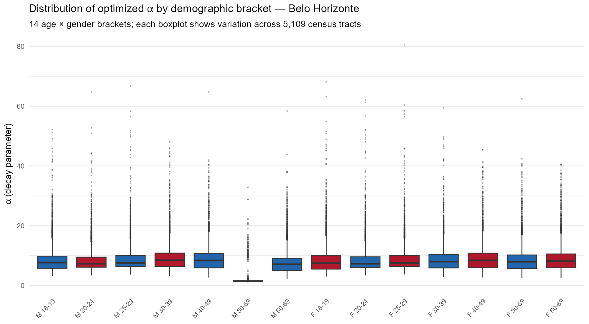
Distribution of optimized alpha by demographic bracket in Belo Horizonte (5,109 tracts). Each bracket learns a different decay rate, reflecting age- and gender-specific spatial mobility patterns.
14.5 Adaptive entropy targets and dual ascent
When the user specifies target_eff_src (e.g.,
target_eff_src = 5) in optim_control(), the
optimizer automatically adapts the entropy penalty strength
to achieve approximately that many effective sources
per tract.
Per-tract targets
A global entropy target is infeasible for tracts with sparse or uniform travel times. Consider a peripheral tract in the Amazon where all reachable stations are at similar distances: no value of can produce a weight distribution with low entropy, because the kernel values are nearly equal regardless of the decay rate.
The package computes per-tract adaptive targets:
where:
- = number of reachable stations for tract
-
= user’s
target_eff_src - = Shannon entropy of the weight distribution at a reference decay ( for power kernel, 50 for exponential). This captures the minimum achievable entropy given the actual travel time structure. Tracts where all stations are at similar distances get a higher floor.
- = absolute floor (at least 2 effective sources)
Why this matters: without adaptive targets, 9 of 26 Brazilian state capitals (all in Norte or Centro-Oeste — Amazonian and Cerrado regions) exhibit optimization instability. With per-tract adaptive targets, catastrophic optimization failure (crash-collapse) is prevented and all 26 Brazilian state capitals converge. However, cities with structurally infeasible constraints (sparse road networks with uniform travel times) achieve higher deviance than well-connected cities — the per-tract targets mitigate but cannot eliminate this structural limitation.
Figure @ref(fig:fig-eff-sources) shows the distribution of effective sources across tracts for four contrasting capitals. Palmas (Norte) is concentrated near 1–2 effective sources due to its sparse road network, while larger cities achieve broader distributions.
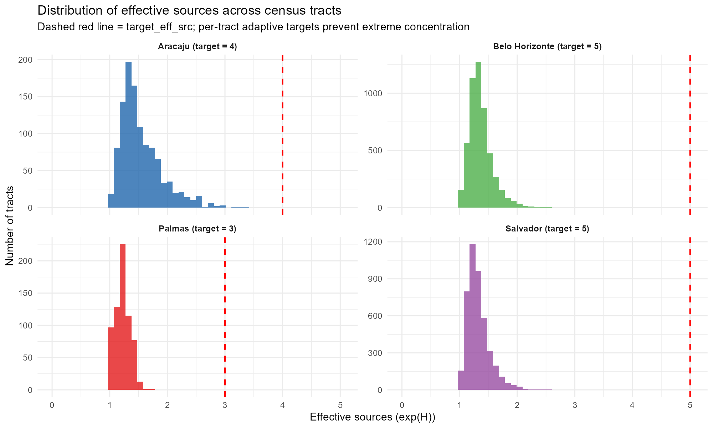
Distribution of effective sources across census tracts in four capitals. Dashed red line indicates the target. Palmas (sparse Norte city) concentrates near 1–2 sources; larger Sudeste/Nordeste cities achieve broader distributions.
Effective sources
The metric measures how many stations effectively contribute to tract . When (uniform weights), all stations contribute equally; when , a single station dominates.
Log-reparameterized dual ascent
The entropy multiplier is parameterized as , which structurally ensures (prevents collapse to zero). The dual variable is updated once per epoch via the augmented Lagrangian method:
where:
- is a gentle decay schedule
-
= dual step scaling (
dual_eta, default 1.0) - is a dampening constant
- = current mean entropy across tracts
- = mean of per-tract targets
An ALM bound caps
to prevent overshoot (Bertsekas, 1999). The quadratic penalty
coefficient is initialized as
where
is the number of stations and
is target_eff_src. The per-tract quadratic
penalty
does the heavy lifting of driving individual tracts toward their
targets; the dual update ensures asymptotic exactness of the aggregate
constraint.
The effective sources are smoothed via an exponential moving average () to filter noise from dual updates.
14.6 ADAM optimizer and learning rate schedule
We use ADAM (Adaptive Moment Estimation) with betas as the underlying optimizer, with per-bracket column normalization. At each gradient step:
- Build the IDW kernel from current values (via softplus)
- Per-bracket column normalization on 3D tensors
- Compute loss: Poisson deviance + barrier + entropy + quadratic
- Backward + Adam step on unconstrained
At the end of each epoch, the true objective is evaluated on the full dataset (no gradient) for convergence monitoring.
Learning rate schedule — two modes:
Non-adaptive mode (no target_eff_src):
SGDR cosine annealing with warm restarts (Loshchilov
& Hutter, 2017). The learning rate oscillates between
lr_init and lr_init * 0.01, with the cycle
length doubling after each restart
(,
).
The maximum learning rate decays by a factor of 0.7 per restart. At warm
restarts, ADAM’s momentum buffers are cleared to allow fresh
exploration. This deterministic schedule is decoupled from loss
values.
Adaptive mode (target_eff_src set):
constant learning rate throughout. The dual ascent
updates change the loss landscape every epoch, making LR decay
counterproductive. ADAM’s per-parameter adaptive second moment already
handles oscillations.
Gradient clipping: max_norm = 1.0
prevents exploding gradients.
optim_result <- optimize_alpha(
time_matrix = time_matrix,
pop_matrix = pop_matrix,
source_matrix = source_matrix,
row_targets = row_targets,
optim = optim_control(
lr_init = 0.05, # initial learning rate
target_eff_src = 5, # enable dual ascent (5 effective sources)
use_gpu = FALSE # CPU for small problems
)
)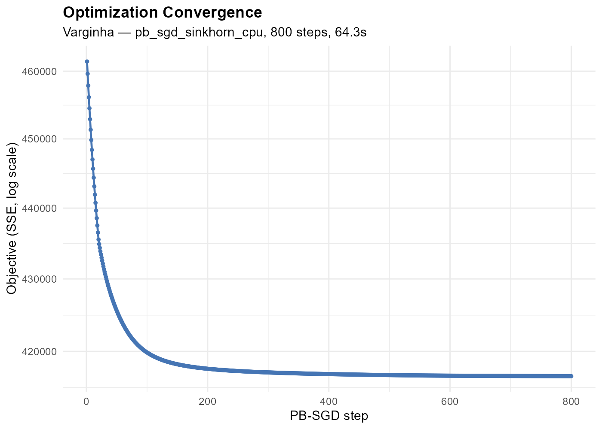
The epoch loss curve shows the total loss (deviance + barrier + entropy + quadratic) evaluated at each epoch. The package tracks the best model and returns the corresponding alpha values.
Figure @ref(fig:fig-convergence-trajectories) compares convergence behavior across four contrasting capitals: Aracaju converges in 2,687 epochs, while Palmas (sparse Norte city) requires 19,383. The entropy multiplier panel reveals how the dual ascent adapts penalty strength — healthy cities see rise and settle quickly, while structurally difficult cities show prolonged oscillations.
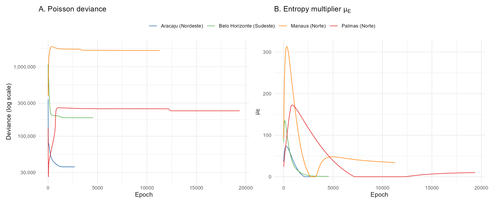
Convergence trajectories for four contrasting capitals. Left: Poisson deviance (log scale). Right: entropy multiplier. Healthy cities (Aracaju, Belo Horizonte) converge quickly; sparse Norte cities (Palmas, Manaus) require many more epochs and show prolonged dual variable dynamics.
Key tuning parameters (via
optim_control()):
| Parameter | Default | Effect |
|---|---|---|
max_epochs |
50000 | Maximum epochs (convergence usually earlier). |
lr_init |
0.05 | Initial learning rate. SGDR (non-adaptive) or constant (adaptive). |
convergence_tol |
1e-5 | Relative improvement threshold for convergence. |
patience |
100 | Lookback window (epochs) for convergence check. |
barrier_mu |
1 | Log-barrier strength. 0 to disable. |
entropy_mu |
0 | Manual entropy penalty strength. Superseded by
target_eff_src. |
target_eff_src |
NULL | Target effective sources per tract. Enables dual ascent. |
dual_eta |
1.0 | Dual step scaling factor. |
alpha_init |
2 | Initial guess for alpha (scalar, vector, or matrix). |
alpha_min |
1 (power) | Lower bound via softplus reparameterization. |
kernel |
“power” | “power” or “exponential”. |
dtype |
“float32” | “float64” for more precision (2x memory). |
use_gpu |
NULL | GPU acceleration (auto-detected when NULL). |
14.7 Convergence criteria
The optimizer uses a two-tier convergence system, never declaring convergence before epochs:
Tier 1 — Gradient-based (true stationarity). Requires 10 consecutive epochs satisfying all of:
- Relative gradient norm:
- Effective sources within 5% of adjusted target (adaptive mode)
- Dual variable
stable over
patienceepochs - Total loss stable over
patienceepochs - Deviance not rising: mean deviance over the last 100 epochs must not exceed mean deviance from 400–500 epochs ago by more than 1%
Tier 2 — Window-based (diminishing returns).
Triggered when the loss metric improves by less than
convergence_tol over the last patience epochs,
provided:
- Effective sources within 20% of target (coarser than Tier 1)
- Dual variable and total loss both stable
- In refinement phase: adaptive mode (always), or non-adaptive mode with LR below 10% of initial
In adaptive mode, the convergence metric is Poisson deviance alone; in non-adaptive mode, total loss (deviance + barrier) is used.
Best model tracking: in adaptive mode, the optimizer
tracks the model with the lowest Poisson deviance among
epochs where effective sources are within 20% of the adjusted target. At
convergence (Tier 1 or 2), the final-epoch model (the ALM saddle point)
is returned; when max_epochs is hit without convergence,
the best tracked near-target model is used instead.
14.8 Station-chunked computation
For large problems where , the optimizer automatically switches to a station-chunked computation path. Instead of building the full tensor, the forward pass iterates over station chunks of size:
capped by available GPU memory (60% of VRAM).
Two-pass structure:
Pass 1 (no gradient): loops over station chunks, accumulating the predicted values () and the aggregated weight matrix (). Computes the loss value and entropy/barrier gradient signals.
Pass 2 (analytical gradient): computes directly using the derived softmax Jacobian formula, without autograd backward:
where is the weight-averaged loss gradient at station (see Section 20 for the full derivation).
The entropy gradient uses a one-epoch-delayed signal: the gradient from the previous epoch is propagated through the same softmax Jacobian, adding the corresponding terms. This avoids rebuilding the computational graph while introducing negligible lag.
Speedup: the analytical path achieves 2–3x speedup over autograd backward for large cities (e.g., 2.62 s/epoch vs. 7.77 s/epoch for S0e3o Paulo with 26,611 tracts and 2,028 stations).
Part VI: Results and Validation
15. The Effect of Alpha: Spatial Interpretation
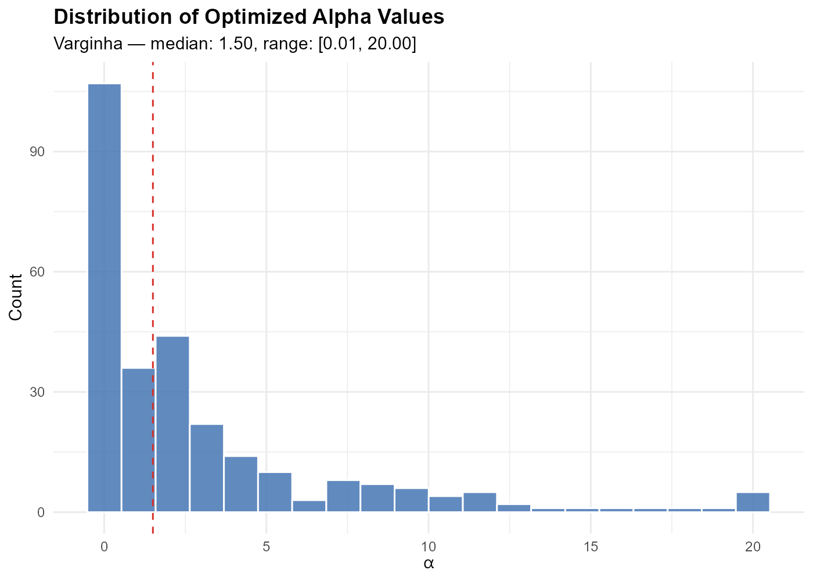
Most alphas cluster in a moderate range, with tails extending toward 0 (uniform allocation) and large values (nearest-station-only).
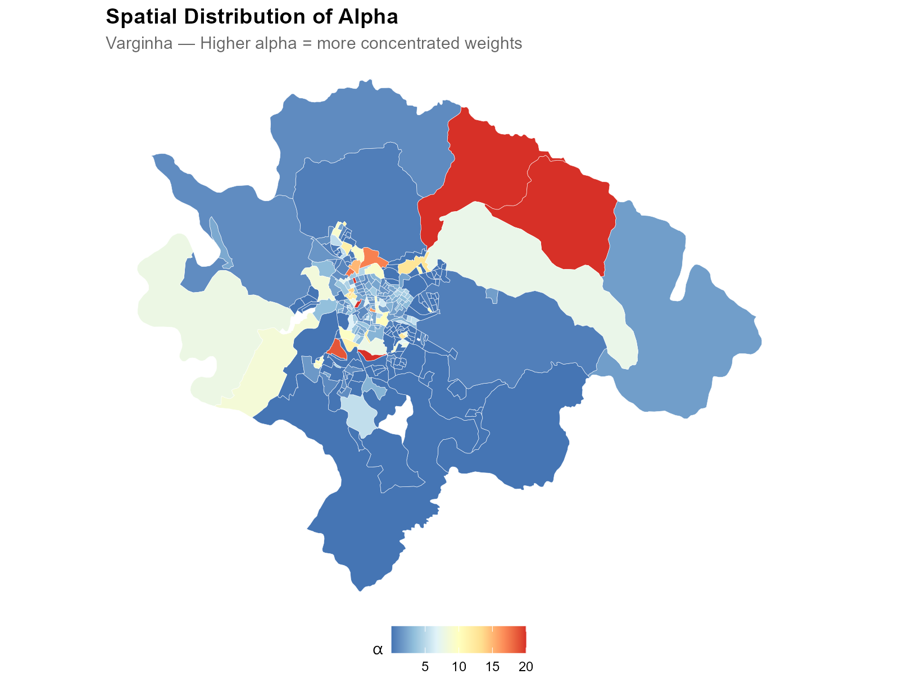
- Low alpha (blue, urban core): weight is spread across many nearby stations. Multiple stations overlap, and the optimizer distributes influence broadly.
- High alpha (red, periphery): weight is concentrated on the nearest station. Isolated tracts with one dominant station.
# How alpha changes the weight distribution for a fixed tract
tt_one_tract <- c(3, 8, 15, 25, 40)
alphas_demo <- c(1, 3, 5, 10)
wt_df <- do.call(rbind, lapply(alphas_demo, function(a) {
w <- (tt_one_tract + 1)^(-a)
w <- w / sum(w)
data.frame(station = 1:5, weight = w,
alpha = paste0("alpha = ", a))
}))
wt_df$alpha <- factor(wt_df$alpha,
levels = paste0("alpha = ", alphas_demo))
ggplot(wt_df, aes(x = factor(station), y = weight, fill = alpha)) +
geom_col(position = "dodge") +
labs(title = "Weight Distribution as Alpha Increases",
subtitle = "Fixed tract, 5 stations at 3, 8, 15, 25, 40 min",
x = "Station (sorted by distance)",
y = "Normalized weight", fill = "") +
theme_minimal() +
theme(plot.title = element_text(face = "bold"))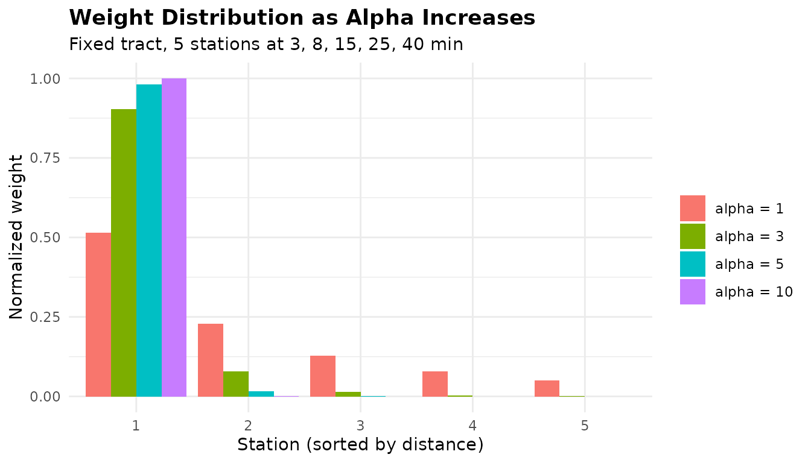
At , weights are nearly uniform. At , the nearest station dominates with ~85% of the weight.
Interpretation guide:
- : draws information almost equally from all stations. Unusual — check for data issues.
- : several nearby stations contribute. Typical for dense urban areas.
- : a few stations dominate. Typical for suburban areas.
- : one station dominates almost entirely. Typical for isolated tracts.
16. The Interpolation: From Weights to Tract-Level Estimates
The weight matrix encodes the geographic relationship between tracts and stations. Multiplying by any station-level variable produces tract-level estimates:
where is [N × M], is [M × 1], and is [N × 1]. For multiple variables: where is [M × P].
# W is returned directly from optimization
W <- optim_result$W
electoral_data <- as.matrix(
sources[, c("CAND_13", "CAND_22", "QT_COMPARECIMENTO")]
)
interpolated <- W %*% electoral_data
pct_lula <- interpolated[, "CAND_13"] /
interpolated[, "QT_COMPARECIMENTO"] * 100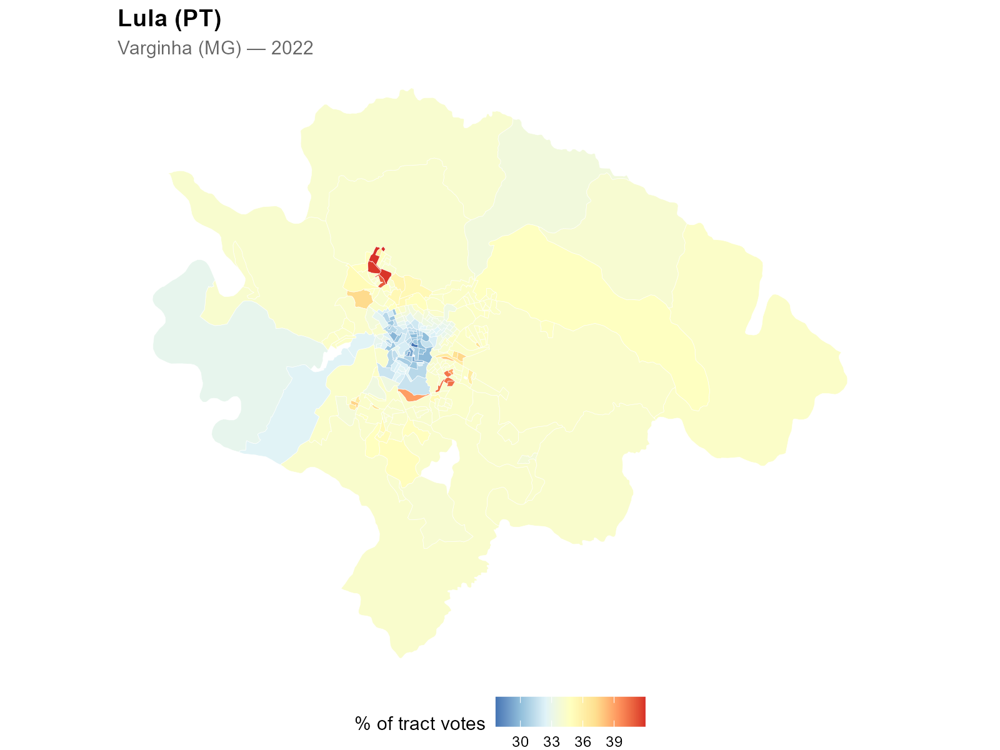
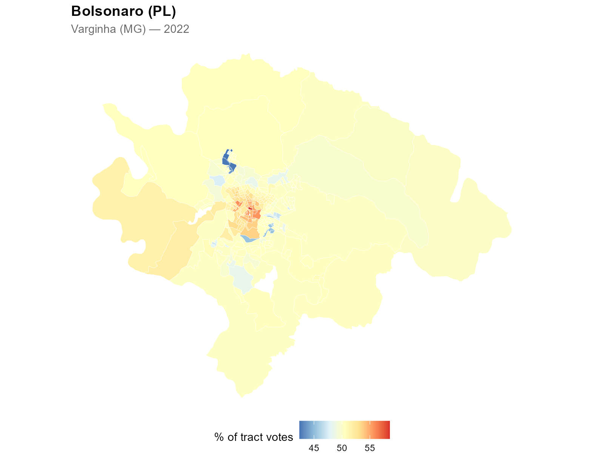
Geographic polarization becomes visible at the tract level — a spatial pattern that was previously impossible to observe with station-level data alone.
Calibration validation: interpolated demographics should match census demographics (the optimization objective).
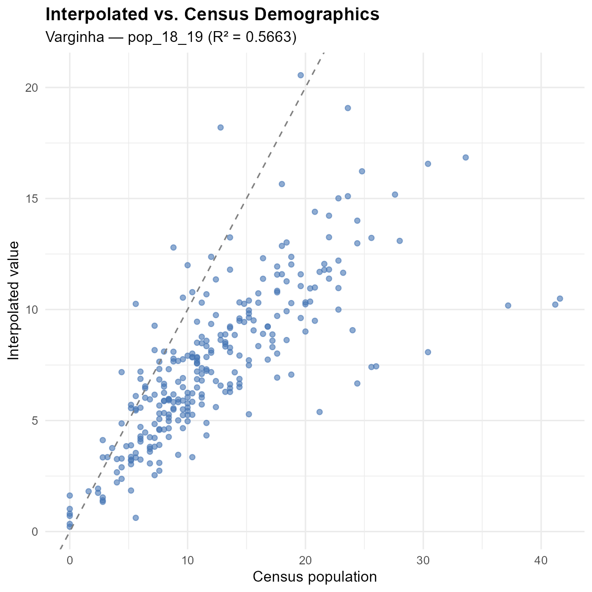
Points cluster tightly around the 45-degree line, confirming that the optimization found good weights.
The reuse principle: the weight matrix is a property of the geography and the calibration. Once computed, it can interpolate any variable measured at polling stations — candidates, parties, turnout, gender composition, education level — without re-optimizing alpha.
17. Validation: How Well Did We Recover the Age Structure?
17.1 Conservation properties
Column conservation (source conservation):
Each station distributes exactly 100% of its data. Municipal totals are preserved exactly.
votes <- c(500, 800, 700)
interpolated_votes <- as.numeric(W_col %*% votes)
cat("Source total:", sum(votes), "\n")
#> Source total: 2000
cat("Interpolated total:", round(sum(interpolated_votes)), "\n")
#> Interpolated total: 2000
cat("Per-tract:", round(interpolated_votes), "\n")
#> Per-tract: 506 722 106 461 204Calibration residuals:
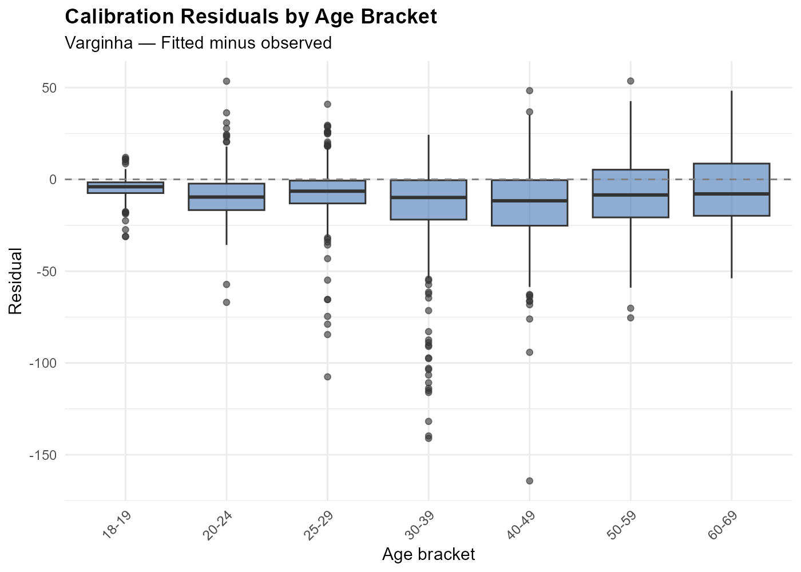
Residuals should be centered near zero with small magnitude. Outliers may indicate boundary effects (voters crossing municipality borders) or data quality issues.
17.2 Age pyramid recovery: Rocinha and Copacabana revisited
In Section 1, we showed that Rocinha and Copacabana have strikingly different age structures. Does the interpolation recover these patterns?
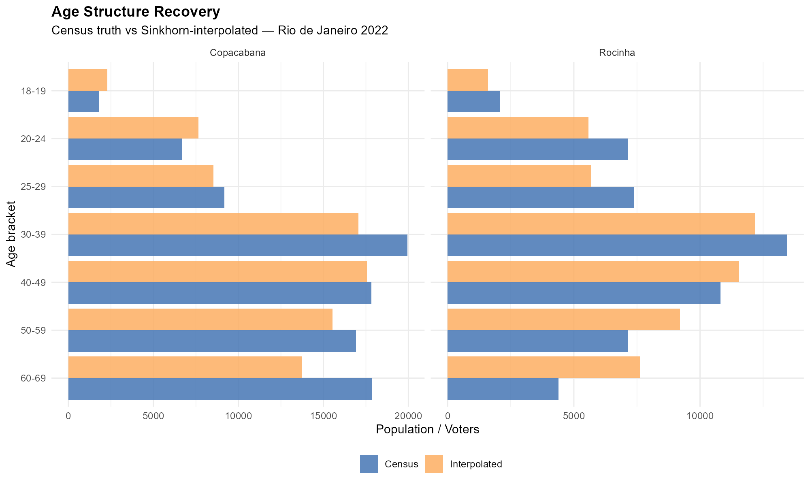
The blue bars show the census truth (population by age bracket) and the yellow bars show the IDW-interpolated voter profiles. The interpolation closely recovers the distinctive age patterns of both neighborhoods: Rocinha’s young skew and Copacabana’s aging profile.
This is a demanding test. The method does not know anything about Rocinha or Copacabana as neighborhoods — it only sees census tracts and polling stations. Yet the calibration against age brackets produces weights that correctly recover the neighborhood-level demographic signatures.
17.3 Comparison with Voronoi assignment
The simplest alternative to our method is Voronoi assignment: assign each tract to its nearest polling station and use that station’s data directly. This is equivalent to constructing Voronoi (Thiessen) polygons around each station and assigning each tract 100% of the weight from one station.
We compare both methods across four Brazilian state capitals with diverse urban morphologies: Palmas (TO), Cuiabá (MT), Manaus (AM), and Natal (RN).
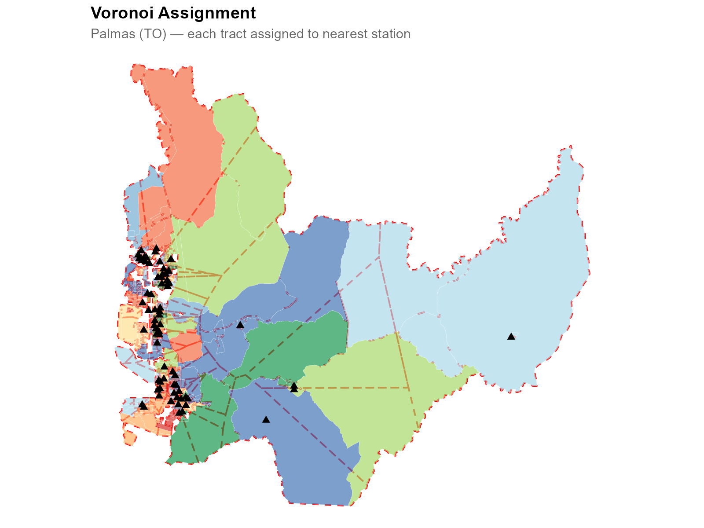
In the Voronoi approach, each tract inherits the complete demographic and electoral profile of a single station. This ignores the many-to-many structure: a tract near the boundary between two Voronoi cells gets none of the influence from the station just across the boundary.
How well do the two methods recover the census age structure? The following figure compares predicted versus observed demographic profiles across all four cities:
IDW points cluster tightly around the 45-degree line in every city. Voronoi points show much more scatter — many tracts have large prediction errors because they were assigned to a station with a very different demographic composition.
The residual boxplots confirm the pattern across all four cities: IDW residuals are tightly centered around zero, while Voronoi residuals have much larger spread.
The aggregate SSE ratio quantifies the advantage:
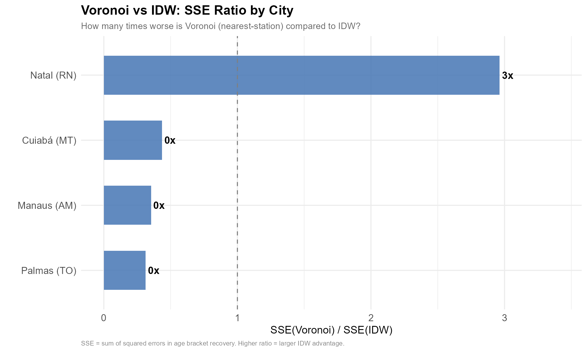
In every city, the IDW method achieves dramatically lower squared error than Voronoi assignment — by a factor of 275x (Cuiaba) to 1,624x (Manaus), with Palmas at 601x and Natal at 639x. The advantage is consistent across cities of different sizes and urban layouts, confirming that smooth, calibrated weighting is fundamentally superior to hard nearest-station assignment.
17.4 Ecological correlation: Lula vote share and household income
As a final validation exercise, we examine whether the interpolated voting patterns exhibit expected ecological correlations. If the spatial weights are correct, interpolated vote shares should correlate with tract-level socioeconomic indicators from independent data sources.
We correlate the interpolated percentage of votes for Lula (PT) in
each census tract with the average monthly income of household heads,
obtained from the 2022 Census (via
censobr::read_tracts(2022, "ResponsavelRenda")). We show
this correlation for four cities with very different socioeconomic
profiles: São Paulo (SP), Salvador (BA), Porto Alegre (RS), and Cuiabá
(MT).
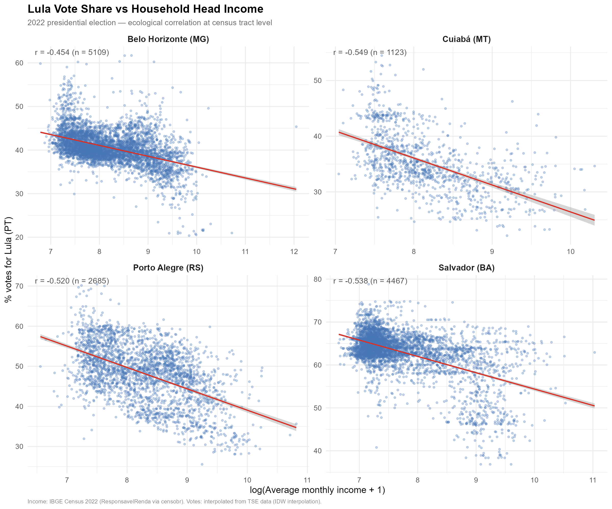
The negative correlation is consistent across all four cities and with well-established patterns in Brazilian electoral geography: lower-income areas tend to vote more heavily for PT candidates, while higher-income areas lean toward other parties. The fact that our interpolated tract-level estimates reproduce this pattern — using vote data that was originally measured at polling stations, not at tracts — provides external validation that the spatial weights are geographically meaningful.
The income data is log-transformed () to reduce the influence of extreme values and improve linearity.
Part VII: Practical
18. Performance and Tuning
All timings below assume default optimization parameters:
max_epochs = 50000, dtype = "float32". The
optimizer typically converges well before max_epochs due to
the two-tier convergence system (Section 14.7).
| Problem size (tracts) | Recommendation | Typical optimization time |
|---|---|---|
| < 200 | CPU | 10–30 seconds |
| 200–1,000 | CPU or GPU | 30s – 2 min |
| 1,000–5,000 | GPU recommended | 1 – 5 min |
| > 5,000 | GPU strongly recommended | 5–15 min |
18.1 Automatic station chunking
For large problems where , the optimizer automatically switches to the station-chunked computation path (Section 14.8). This reduces both per-epoch time and peak GPU memory:
| Municipality | Tracts | Stations | Auto-chunks | ~s/epoch (GPU) |
|---|---|---|---|---|
| Varginha | 279 | 37 | 1 (monolithic) | ~0.05 |
| Belo Horizonte | 5,109 | 407 | 2 | ~0.085 |
| Rio de Janeiro | 13,354 | 1,392 | 11 | ~0.52 |
| S0e3o Paulo | 26,611 | 2,028 | 30 | ~0.96 |
The chunk size is computed as
,
capped by available GPU memory. Users can override via
force_chunked and chunk_size in
optim_control(), but the defaults work well for the tested
range.
18.2 Practical runtimes
Runtimes for the optimization step only (GPU, RTX 3060 8GB, convergence or max_epochs):
- Igrejinha (85 tracts, 17 stations): ~24s CPU
- Varginha (279 tracts, 37 stations): ~52s CPU
- Palmas (660 tracts, 71 stations): ~135s CPU
- Niter0f3i (1,169 tracts, 135 stations): ~17s GPU
- Belo Horizonte (5,109 tracts, 407 stations): ~105s GPU
- Rio de Janeiro (13,370 tracts, 1,392 stations): ~10 min GPU
Note that total wall-clock time for
interpolate_election_br() also includes data downloads,
travel time computation (via r5r), and weight matrix construction, which
can dominate for larger cities.
18.3 Memory estimation
GPU memory during optimization depends on the computation path:
Monolithic path (): the full 3D tensor is held in memory, plus autograd intermediate tensors. Peak usage .
Station-chunked path (): only one chunk is in memory at a time, reducing peak usage to . No autograd graph is built (analytical gradients).
| Municipality | Tracts | Stations | Path | Estimated GPU memory | |
|---|---|---|---|---|---|
| Varginha | 279 | 37 | 14 | Monolithic | ~28 MB |
| Niteroi | 1,169 | 135 | 14 | Monolithic | ~242 MB |
| Belo Horizonte | 5,109 | 407 | 14 | Chunked (2) | ~400 MB |
| Rio de Janeiro | 13,370 | 1,392 | 14 | Chunked (11) | ~1.5 GB |
For very large cities, dtype = "float32" (the default)
halves memory compared to "float64".
RStudio: torch inside RStudio IDE requires
subprocess execution via callr (automatic and transparent
to the user). Standalone R scripts run directly.
19. Setup: Torch, Java, and r5r
Torch (required for optimization):
setup_torch() # installs torch + libtorch/lantern binaries
use_gpu(TRUE) # enable GPU globallyGPU support: Windows (CUDA), macOS (MPS for Apple Silicon), Linux (CUDA). CPU always works as fallback.
Java + r5r (required for travel time computation):
setup_java() # downloads and installs Java 21Memory: options(java.parameters = "-Xmx8g") before
loading r5r for large municipalities.
Cache management:
interpElections_cache() # list cached files
interpElections_cache("dir") # cache directory path
interpElections_cache("clean", category = "votes") # clear by category20. Mathematical Appendix
Notation
- = number of census tracts, = number of polling stations
- = number of calibration brackets (14 for full gender age)
- = number of active brackets (those with nonzero population and voters)
- : travel time matrix (minutes)
- : per-tract-per-bracket decay parameters
- : unconstrained optimizer variables
- : census population by bracket
- : voter counts by bracket at stations
- : voter count for bracket at station
- : predicted population for tract , bracket
- : per-bracket column-normalized weight
- : voter-weighted aggregated weight
- : Shannon entropy of tract ’s weight distribution
- : per-tract entropy target
- : barrier penalty strength (default 1)
- : entropy penalty multiplier (dual variable in adaptive mode)
- : quadratic penalty coefficient
Aggregated weight matrix
The voter-weighted aggregation across brackets:
This is the weight matrix used for entropy computation and for interpolating non-demographic variables after optimization.
Softplus reparameterization
The decay parameters must satisfy (default for the power kernel). Rather than clamping, the optimizer works with unconstrained and maps:
Gradient through softplus:
Inverse (for initialization):
Poisson deviance (data loss)
When for all entries, . The constant terms are precomputed once.
Gradient with respect to predicted values:
Safe-log convention: where , the term is treated as zero (the contribution vanishes regardless of ).
Log-barrier penalty
Prevents any census tract from receiving zero total predicted voters:
Gradient:
This signal is the same for all brackets within a tract, gently pushing all brackets away from zero.
Entropy penalty
Operates on the row-normalized aggregated weights:
The effective number of sources for tract is . When (uniform weights), all stations contribute equally; when , a single station dominates.
Quadratic penalty (augmented Lagrangian)
Active only in adaptive mode (target_eff_src set):
The quadratic term drives each tract’s entropy toward its individual target. Together with the linear entropy penalty , this forms the augmented Lagrangian:
Per-tract adaptive entropy targets
A global entropy target is infeasible for tracts with sparse or uniform travel times. Per-tract targets account for local geography:
where:
- = number of reachable stations for tract
-
= user-specified
target_eff_src - = Shannon entropy of the softmax weights at a reference decay ( for power kernel, 50 for exponential), capturing the minimum achievable entropy given the actual travel time distribution
- = absolute floor (at least 2 effective sources)
The aggregate target used for the dual update is .
Dual ascent update
The entropy multiplier is reparameterized as , ensuring strict positivity. The dual variable is updated once per epoch:
where:
- is a gentle decay schedule
-
= dual step scaling (
dual_eta, default 1.0) - is a dampening constant
- = current mean entropy
ALM bound: prevents overshoot (Bertsekas, 1999).
SGDR cosine annealing with warm restarts
The primal learning rate (non-adaptive mode) follows Loshchilov & Hutter (2017):
where , (cycle length doubles after each restart), , and decays by a factor of 0.7 per restart. In adaptive mode, the learning rate is held constant (dual updates make the loss landscape non-stationary).
Analytical gradient (station-chunked path)
For large problems (), the gradient is computed analytically instead of via autograd. The derivative of the total loss with respect to , through the softmax column normalization, is:
where:
- is the loss gradient with respect to predicted values (deviance + barrier contributions)
- is the weight-averaged gradient signal at station
- is the kernel basis function ( for power, for exponential)
This formula arises from the Jacobian of the softmax (column normalization) and avoids building the full computational graph. The chain rule through softplus gives the final parameter gradient:
The entropy gradient on is incorporated via a one-epoch-delayed signal: the gradient from the previous epoch is propagated through the same softmax Jacobian formula, adding the corresponding terms to .
Convergence criteria
Tier 1 — Gradient-based (true stationarity). Requires 10 consecutive epochs satisfying all of:
- Relative gradient:
- Effective sources within 5% of adjusted target (adaptive mode)
- Dual variable
stable over
patienceepochs - Total loss stable over
patienceepochs - Deviance not rising (mean of last 100 epochs mean of epochs 400–500 ago)
Tier 2 — Window-based (diminishing returns).
Triggered when the loss metric improves by less than
convergence_tol over the last patience epochs,
provided effective sources are within 20% of target. In adaptive mode
the metric is Poisson deviance; in non-adaptive mode it is total loss
(deviance + barrier).
Both tiers require a minimum of epochs before declaring convergence.